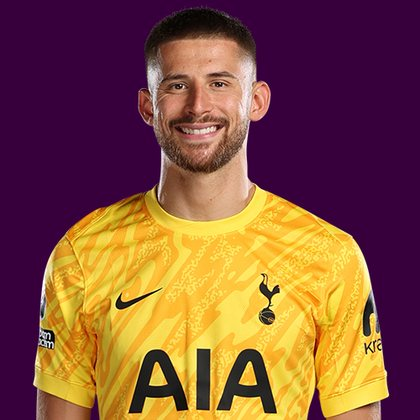

PITCHKEEP
Premier League ranks
Player File · GKP TOT · Premier #331

Guglielmo Vicario
GKP · Spurs · age 29 · £4.5m
2025/26 Premier League
| Year | Starts | Min | G | A | xG | xA | CS | Saves | Bonus | YC | Sleeper | FPL |
|---|---|---|---|---|---|---|---|---|---|---|---|---|
| 2025/26 | 31 | 2790 | 0 | 0 | 0.0 | 0.04 | 7 | 83 | 6 | 1 | 135.0 | 90 |
FPL news
Unavailable — Has joined Juventus on loan for the rest of the season
Plus
- 135.0 Sleeper BPL 2025 points (Pitch #83).
- 83 saves at 2 points each. That is why keepers crack this list.
Minus
- 50 goals conceded. Sleeper taxes defenders and keepers −2 a goal.
- Unavailable; Has joined Juventus on loan for the rest of the season.
- Consensus 212.0 vs Sleeper #83 — the industry is cooler than last year's box score.
- Board spread 83–212 (Sleeper BPL 2025 to FPL Ownership).
PitchKeep Take · The Premier
Guglielmo Vicario is a goalkeeper for Spurs, age 29, £4.5m. The Premier ranks him 331st overall by splitting Sleeper BPL 2025 (#83, 135.0 points) with the consensus of 3 other boards (212.0). Last year's Sleeper line ran 129 spots ahead of the expert/FPL mix. The third list keeps some of that production bump and refuses to throw the other boards out. That is the whole point of not just republishing The Pitch.
The 2025/26 line is 31 starts, 2790 minutes, 83 saves, 7 clean sheets and 50 goals against. Official FPL scored it at 90 points (2.9 per match) with 6 bonus. Sleeper's table turned the same counting stats into 135.0. Keepers get 8 a clean sheet, 2 a save, and −2 a goal against. That is a different sport than FPL's 10-from-saves cap, and it is why this desk ranks them at all.
Underlying: 0.0 xG, 0.04 xA, 0.04 xGI. The job is shot-stopping volume in front of whatever Spurs is this year. 83 saves is the Sleeper case. 7 clean sheets is the FPL case. If the back line leaks, both numbers move together and this ranking goes with them. The friendliest board is Sleeper BPL 2025 at 83; the coldest is FPL Ownership at 212.
Market: £4.5m, 4 boards on the file. Price is the FPL tax, not the rank. The Premier is who produced and who the boards still believe. ICT 72.2.
Instruction: he is on the 400, which is already a statement, and he is not a star. Stash in Sleeper if the minutes are real. Do not let a Pitch screenshot make you start him over a Premier top-80. FPL flag: unavailable; Has joined Juventus on loan for the rest of the season. Nearby on The Premier: Kaye Furo, Nico Iglesias, Arnaud Kalimuendo. Versus The Pitch (Sleeper-only #83), the hybrid moves him down to #331. That move is the third list doing its job.
He is 29, which on this desk is neither a dart nor a warning label. Prime-age goalkeepers get ranked on what they just did and whether Spurs still gives them the ball. 2790 minutes says yes. The 2026/27 FPL price (£4.5m) is the app's guess at whether that continues. The Premier is the blend of that guess and the box score.
You start one goalkeeper. That positional cap is why The Premier will not put a saves leader in the overall top ten unless the consensus also shows up. Vicario's Sleeper line (135.0) already made The Pitch. The other boards (212.0) decide how far the hybrid lets him climb. Draft him as a keeper, not as an outfielder who happens to have gloves.
How to use the file: The Pitch is the Sleeper-only 400 (he is #83 there). The Premier is the 50/50 with every other board we track. Attack, Midfield, Defence, and Keepers re-rank the same Sleeper table by position. BK Value on this page follows The Premier when you are on the hybrid calculator and The Pitch when you are on the Sleeper calculator. Same curve either way — 12,000 at 1.01. Unranked sources are skipped, never treated as 999, which is why a player missing from Yahoo's XI is not secretly ranked 400th.
Sleeper vs FPL
Same 2025/26 line, two scoring tables
Board graph
Spread 83–212 · 4 sources
Tape · 2025/26 Premier League
Guglielmo Vicario vs chelsea | All saves and passes! | Premier League 4/4/2025
Every Board
Spread 83–212 · 4 sources
| Source | Rank |
|---|---|
| Sleeper BPL 2025 | 83 |
| FPL 2025/26 Points | 147 |
| FPL ICT Index | 194 |
| FPL Ownership | 212 |
On The Premier nearby — Kaye Furo (#329) · Nico Iglesias (#330) · Arnaud Kalimuendo (#332) · Dilane Bakwa (#333)